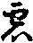

卍新纂大日本續藏經 第53冊
No.836 俱舍論疏 (7卷)
【唐 神泰述】
第 17 卷
俱舍論疏卷第十七
○分別賢聖品第六之三 論卷二十五
自下第四有七行半頌明六種種性於中初一行半頌有明阿羅漢文中初牒前如前所說不動應果初盡智後起無生智二問諸阿羅漢如預流等有差別不三答亦有四問云何五舉頌答六釋頌本文中初釋上兩句二於此六中下釋第三第四句即此五種總名時愛心解脫以恒時愛護無攝聖道及心解脫擇滅故亦說名為時解脫者以要待眾緣具時方能入定及具眾緣方得解脫故略初要待言故但言時解脫如世具言此成蘇瓶略初此成言故但言蘇瓶由此五人要待眾緣具時方言入定謂待資具無病處等勝緣合時方入定故雖復得定及具勝緣方得解脫三釋第五第六句不動法性說名為後即此名為不動心解脫以無退動定及退心解脫故亦說名為不時解脫以不待時入定及不待時心解脫故謂三摩地隨欲現前不待勝緣和合時即能入定及解脫故或依暫時解脫建立時解脫名或依畢竟解脫名或依畢竟解脫建立不時解脫名以時解脫容有退隋時不時解脫無退墮時故此不動性從學位見至性生。
自下第二有半頌明羅漢六性本始不同文中初問如是所明六羅漢性為是學地無有為後無學方得二答不定三問云何四舉頌答五釋頌本文中初釋頌本退法種性如是學地先有思法等五亦有無學方得謂有學地先來是思法性後得羅漢亦是思法性或有先來學地及羅漢是退法性後念根成思乃至不動隨應當說正理論六十七云言退者謂彼獲得如是類根安住此根為退緣會便退所得無退緣者便槃涅槃或有勤精進得勝姓說彼脩集此種姓時謂有一類由他緣力方於佛法至誠歸趣彼極少時取少分相便乘速進奢摩他力所持慧光入無學地於無學地趣入相中彼先不能審諦取故無有恒時尊重行故傍樂寂止背勝觀故與順退法相隨順故數失正念遠於道器所獲勝德容數退失如於聖教習誦究竟由遇散亂病逸等緣於習誦文不能記憶名為退失先所習誦由此譬喻應知退法言思法者謂有獲得如是類根安住此根能於諸欲極多厭惡由思厭惡起自害思或此類根雖性殊鈍而多緣力之所集成於加行中念力堅固多住厭觀少有欣情恒作是思勿遇病等便於正念有所忘失於加行中致有慢緩由加行慢緩令我有退失由斯籌慮起自害思或由難辛方建勝位觀諸財寶追求貯積守護受用咽棄等時無不□生種種苦惱彼審觀已由此苦緣身命雖存都無勝用又觀身器是糞穢車避危就安攝養無益猶如牢獄丘冢穢屍受樂此身豈名智者由斯觀解起自害思復有餘師作如是說彼類法爾稟斯種性不顧身命躭求解脫執刀自擬用以勵心如說以刀扣於自頸由斯勵己心得解脫此類名為思法種性言護法者謂有一類恒於時愛心解脫中繫念現前專精防護彼作是念我且未能脩習練根達安住法但於時愛心解脫中能不放逸精勤防護如是種類名為護法安住法者謂離勝退緣雖不自防而亦能不退雖勝加行亦不練根多住處中故名安住有餘師說彼所獲德非劣非勝故名安住堪達法者謂性堪能好脩練根速達不動有餘師說彼性能得一切功德故名堪達然非一切功德之器不動法者謂有一類根性殊勝於行自在於斷煩惱隨煩惱中得方便智不為一切隨順退法之所傾動具無生智性不怯弱獲得第一安隱住處內分力強勝觀行攝於一切義殷重妄解已能善取攝盡地相不護所證故名不動此論言退法者謂遇少緣便退所得非思法等遇少緣退言思法者謂具退失以刀扣頸恒思自害言護法者謂於所得多憙防護安住法者離勝退緣遇少退緣雖不自防亦能不退遇勝退緣自防不退不防則退雖勝加行亦不增進起勝加行加能增進堪達法者彼性堪能好脩練根不動法者彼必無退此六種性先學位中初退及思皆闕恒時及尊重加行由根有異故有差別第三唯有恒時加行第四唯有尊重加行第五第六皆具二種由根利鈍差別為二退法種性非必定退乃至堪達非必能達俱約容有建立此名故六羅漢通三界有若執退者必定應退乃至堪達必能達者彼至欲界具足有六色無色中唯安住不動彼無第一退失第二自害第三自妨第五堪達能脩練根故唯有二。
自下第三有半行頌明六種性退果退性文中初牒如是六種羅漢中為誰退性為誰退果次須舉頌答後釋頌本於中初總料簡不動種性必無退理前之五種皆有退義二釋初句於前五中後四皆有從種性退如堪達法退至安住等退法一種無退性理由此種性最居下故三釋第二句五種皆有從果退義雖俱有退能思等四並非先性謂諸無學先學位中所住思等彼從此性必無退理以學無學道所成堅故若諸有學先凡位中所住思等種性後入至位彼從八性亦無退理世出世道所成堅故若住此學位及無學位後脩練根所得思等四種種性彼從此性容有退理二先位中住思等性必亦無退者一先凡位中住思等性後入聖位必亦無退二先學位中住思等性後入無學必亦無無退此所得羅漢果中唯先學位是退法根有退果義就四果中又亦無退先所得預流果後所得三果容有退義是故定無退預流果由此義故應果退法有三一增進根二退住學根三住自位而般涅槃若先學地是退種性後得無學亦退種性從退種性轉至思根此有四事三如前說謂退思根退住無學退根種性餘三如次護法有五安住有六堪達有七應知後二一一增故思法等四退住學位時還住學地退根非餘若異此者先學地是退根今退住思等根得勝種性故應是進不退正理論六十八云諸學位中從退法性脩練根行轉成思等及得學果皆容退失諸無學者先學位中所住種姓故從此性必無退理學無學道所成堅故諸有學者先凡位中所住種性彼從此姓亦無退理世出世道所成堅故二先位中住思等姓必無有退此所得果此姓二道所成堅故彼從思等脩練根行轉得護等唯可退姓轉所得姓進得學果亦有退義由此種姓非二道成不堅牢故若就四果并退果義雖五種姓皆可退果而先所得必無有退謂四果中先所得者即預流等前三隨一從此先果必無退義是斷見惑所得果故聖斷見惑必無退故正理論云何緣練根成思等者退彼應果住學位時住先退姓非所退者得思等道今已捨故豈不學位轉成思等得應果時雖捨所得學思等道而住應果思等種姓此亦應然此例不齊以彼學道攝彼無學道為等流果故非無學位所捨思等與此學道為同類因可能引學思等種姓故應退住先所捨者有餘於此別立證因謂若退住所退種姓得勝種姓故應是進非退此非證因若無二義可有是進非退過故然得勝姓雖可名進而起惑故亦名為退由此彼難於理無失又彼退起障涅槃法聖忻涅槃過於聖道設得勝姓退涅槃故但應名退不應名進四明諸部諍論四果退不退若依薩婆多初果不退後三果退若依經部羅漢亦不退今文中先明薩婆多部初果不退文中初問何緣定無退先果者二答以見所斷依無事故三難應說此或緣無四通非此緣無諦為境故然於諦境不如實緣五徵諸煩惱中誰不如是六釋雖皆如是而有差別如文可解乃至色等境中唯染著是貪增倍是瞋高舉是慢不了是無明七又見斷惑於諦理中執我我所是有身見斷常是邊見無是邪見等取疑及無明親迷諦起非諦中有少我等事見斷貪瞋慢見惑二取緣此我見等生是故皆名依無事或脩所斷或於色等中謂好醜等而生貪瞋等然色等境皆極微性實無好醜於聚集時非無少分好醜等別是故可名依有事或八又見斷或迷諦理起名依無事以理非事故諦理真實揩定可依聖慧已證必無退理事相快為無定可依斷迷彼惑有失念退九或脩斷惑非審慮生乃至聖不審慮於麤事中失念惑生乃至非由率爾可起見或聖若審慮便見諦理故聖見斷定無退義。
上來雖有九文合明薩婆多初果無退後三果退次明經部羅漢亦無退唯一來不還世俗道得亦有退理故正論六十八言然經主意作如是言阿羅漢果亦無有退一來不還世俗道得容有退義引經證言聖慧斷或名為實斷初後二果俱由聖慧斷或而證故無退理此論文中初述經部師說從羅漢果亦無退義論主評云彼說應理二總問云何知然三總答由教理故四別明由教於中初問如何由教次答由教於中初引經言聖慧名實斷故又經言有學恐放逸退故佛誡言應不放逸非阿羅漢二會釋經雖有經言佛告慶喜我說利養等亦鄣羅漢而不說退聖慧及無為阿羅漢果但說退失現法樂住事觀靜慮三引經證經言不動心解脫我說不退故四牒薩婆多引經難釋若謂有退由經說有時愛解脫我經部亦許然但應觀察彼之所退為如薩婆多退無漏聖慧及擇滅應果性邪為如我經部退有漏靜慮邪如我經部釋時愛解脫但約有漏靜慮釋然彼根本靜慮等持鈍根之人要待眾緣具時方現前故名時解脫彼為獲得現法樂住有善法欲數希現前故名為愛有說此有漏定是貪所愛味法故名為愛諸阿羅漢果聖慧性及無為解脫恒隨逐故不應名時一得永得更不希求故不名愛五經部反難薩婆多若無漏應果性容有退者如何世尊但說所說現法安樂住有可退理邪由此證知無漏應果性必是不動然於有漏定退失者是鈍根若諸利根則無退失故約有漏定辨退不退法思等餘五種性如理應思但約有漏定辨六種性無漏定一向是不動也無明三性不同文中初問第六名不退又名不動第四名安住義既相似有何別邪答第六種性中非練根得名為不退練根所得名為不動此二所起有漏殊勝等至設遇退緣亦無退理第四安住法者但於己住無漏諸勝得中能無退失住於本性不能更引餘勝得生設復引生有漏勝得從彼可退是不退等三種差別七會釋喬底迦六反退失者非是退失無漏應果然喬底迦昔在學位於有漏時解脫極散味故又鈍根故六反數數退失深自厭責執刀自害由於身命無所戀惜至第六反臨命終時方得羅漢便般涅槃故喬底迦亦非退失阿羅漢果八引增十經難薩婆多增壹阿含從一法門增至於十名增十經彼增十經中作如是說一法應起謂有漏定時愛心解脫一法應證謂無漏定不動心解脫若汝薩婆多無漏應果性名為時愛心解脫者何故於此增十經中再說應果言一法應一法應證邪九重責薩婆多又曾無處說阿羅漢果名為應起但說應證十四更責薩婆多又說鈍根所攝應果名為應起為顯何義次牒計破若顯能起利最能起若顯應起利最應起故時解脫俱是有漏定非應果性十薩婆多難若爾何故說時解脫應果十一經部答謂有應果根性鈍故要待時故有漏定方現前若與彼相違名不時解脫唯約有漏定辨時不時非約無漏應果性辨時不時故不應難十二別阿毗達磨三因起惑證應果不退以應果起惑不具三因故若謂彼據具因生說復有何法不具生如心心法具四因生無不具四而得生者三因起惑應亦復爾。
上來雖有三文合為第四明由教自下第五明由理文中初問如何由理次答若阿羅漢有令煩惱畢竟不起有漏治已生是則不應退起煩惱若阿羅漢此畢竟治道未生未能永拔煩惱種子故應非漏盡若非漏盡寧說為阿羅漢阿羅漢此云應已漏盡故應受供養也後是名由理。
上來雖有三文合為第五明由教六薩婆多引經難若羅漢不退爾者汝經部師應釋炭喻契經如彼經說乃至有時失念故生惡不善覺此經唯說阿羅漢由此經言乃至臨入涅槃故知唯說羅漢以餘經中有何說此隨順遠離等言名應果力故知此炭喻經唯明應果。
上來引炭喻經前文證應果退次引後文又此炭喻經後文說彼於一切順漏以能永吐已得清涼既言永吐故知不退又言已得清涼由此定知是阿羅漢七薩婆多為釋炭喻經實後所說經言於一切順漏已能永吐等是阿羅漢然彼所引前文如說多聞諸聖弟子於行住時未善通達有時失念故生惡不善覺容有此事謂有學者一來不還以世俗道證此二果於行住時由失念故容起煩惱後以聖慧斷非想或成無學果則無起義歎經前文依學位故有時失念生惡不善覺說退無失八序本宗婆沙師說羅漢亦退。
自下第四有半行頌明學異生六性練根文中初問唯羅漢性有六為餘學異生亦有六性耶二問設有六性皆能練根不次舉頌答於中初句答初問次句答第二問後釋頌本於中初釋初句有學異生種性亦六以六種果彼為先故次釋第二句然見道位必無練根此位無用起加行故脩道唯於信解見道前異生位中皆能脩練根如無學位相似婆沙第七卷云順解脫分亦有六種謂退法種性乃至不動法種性轉退法種性順解脫分起思法種性順解脫分乃至轉堪達種性順解脫分起不動法種性順解脫分轉聲聞種性順解脫分起獨覺及佛種性順解脫分轉獨覺種性順解脫分起聲聞及佛種性順解脫分若起佛種性順解脫分已則不可轉極猛利故。
自下第五有一行頌明三乘六性具退多少文中初引經如契經說乃至行法樂住隨一有退不動心解脫定說無因緣從此退二問如何不動法退現法樂住三舉頌答四釋頌本於中總舉退有三及列三退名釋上兩句二於此三中下釋第三句明佛唯有最後受用退三餘不動法下釋第四句明餘不動羅漢辟支具有受用及未得退餘五種性具有三退四釋前難約受用退說不動法退現法樂無相違過五述經部初二果無退論者作如是說諸無漏解脫六種羅漢皆名不動然別立第六不動法者唯約有漏定辨六種性如前釋通有漏定有退不應為難正理論六於三退中前二非得為體第三唯彼不現在前。
自下第六有一行頌明退果相文中初牒前問諸阿羅漢幾許退果初問為更生不次問諸住果時所不作事退時作不二答不爾三問何緣四舉頌答於中上兩句答初問下兩句答後問五釋頌本文中初釋上兩句退果不命終義釋引經如文可解次釋下兩句有住果位所不應為身語二業違果事業由慚愧增上故於暫退持亦必不造譬如非夫雖蹷不仆還復如本威儀正理論第七十云若有壽量將臨盡者必無退理無失念故要餘壽方有退理退以不久必還證得又住果位所不應為違果事業雖暫失念煩惱現行如住果時必無作理如高族者暫失位時不等凡庸造鄙下業脩不淨觀入聖道者容有退失脩治息念入聖道必無退失尊重正觀無貪癡增如次應知有退無退何界何趣容有退耶唯欲界人三別有退六欲天處得聖果者有說利根故無有退以有勝智能制伏心令背妙境入聖道故有說退者由闕資緣或所依身不平等故六欲天處二事並無雖有鈍根隨信行性生彼得聖亦無退理云何心無間起惑退耶且依無學起惑退者若起色纏無色纏退唯從自地順退分定相應善心無間而起非住欲界有上地攝無覆無記心現在前唯除通果心然無從彼退豈不順分各於自地離染時捨如阿無學者未退起惑彼心現前理實如是然順住分品類有三一少順退二少順進三守自位前言自地順退分定即順住分中少分順退者少順退故約順退名然此定心與守自位多相涉故順住分攝諸有未失順退分者彼心無間煩惱現前若捨彼心從順住攝少順退者起煩惱退故於文義無所相違若起欲纏而退失者從自地善無覆無記二心無間皆容現前諸從學位起或退者起色無色煩惱退時若先令離此地染者唯從此地順退分定相應善心無間而起若未令離此地染者從此地攝善及染汙二心無間皆容現前起欲界纏而退失者若先令離欲界繫染從自地善無覆無記二心無間皆容現前若未令離欲界染者從欲善染無覆無記三心無間皆容現前若未現前獲得清淨靜慮無色必無能起色無色纏退失所得彼惑從彼無間起故但起欲纏退失所得若現前得清淨靜慮猶未現前得淨無色必無能起無色纏退起欲色纏退失所得若已現前獲得清淨靜慮無色通起欲色無色界纏退失所得諸有退失先所得時若起上纏現在前退不失下善不成下惑若起下纏現在前退定失上善定成上惑復有欲令委先退已後時對境惑方現前施設足論當云何釋如彼論說無色三纏一一現起退無色盡住色盡識身足論復云何釋如彼論說無色界繫染心現前捨無學善續有學善退無學心住有學心此俱不相違依學時說故謂先雖退而未覺知後起惑時方自覺退如有先誦四阿笈摩中發多時雖忘不覺後誦不得方自知忘此亦應然故無違失住何心退後起惑耶住欲界中無覆無記威儀工巧異熟生心退已後時方能起惑然此欲界繫無覆無記心惑有總三界煩惱此心正起無有退得三界惑義惑有但違欲色煩惱此心正起容有退得無色惑義惑有但違欲界煩惱此心正起容有退得二界惑義惑有不違三界煩惱此心正起容有得三界惑義一切退已隨其所應起惑前心皆如上說於此二說前說為善。
自下第七有兩行頌明轉根義文中初牒前問如上所言有練根得一問無學有學練根各幾無間幾解脫道二問何性攝三問何所依次舉頌答於中初三句答初問無漏答第二問依人三下三字四句答第三問後釋頌本文中初釋上兩句及久習故二釋學一有學位中轉一一性各一無間一解脫道如得初果上相違故彼加行道學無學位各一三釋無漏如是無間及解脫道一切唯是無漏性攝聖者必無用有漏道而轉根理以有漏道非增上故正理論云我所永稟諸大論師咸言練根皆為遮遣見斷惑力所引發無覆無記無知現行故學位中脩練根者正為遮遣見惑所發無學位中脩練根者正為遮遣脩惑所發如如斷彼能發惑時所起無間解脫多少如是如是斷彼所發無知現行道數亦爾是故無學脩練根時用九無間九解脫道學位練根二道各一然見脩惑所發無知隨所障殊有多品類故轉退等成思等時諸□現前各有所遣由此無有起得勝姓有餘師說一切練根皆一加行無間解脫前說為善理如前故如是無間及解脫道一切唯是無漏性攝聖者必無用有漏道而轉根理以世俗法體非增上無堪能故一切加行皆通二種如是所說但據現行兼未來脩復有差別謂無學位脩練根時加行未來亦通脩二九無間道及八解脫道未來所脩亦唯無漏第九解脫未來脩二兼脩三界所有功德與初盡智所脩同故若有學位脩練根時加行未來亦通脩二無間解脫未來所脩亦唯無漏如得初果若爾豈不廣論相違如廣漏言從信解性脩練根行得見至時十四化心爾時亦得寧不許學解脫道中亦於未來脩有漏道此無違失所以者何彼論但依得俱生說如下地道現在前時上地化心亦說為得謂如已離三靜慮染依初靜慮入見諦者亦說彼得四定化心然理不應由下見道現在前故脩上地法彼久但依見道與彼得但生說此亦應然然無學位脩練根時道數所脩如斷有頂若有學位脩練根時道數所脩如斷上界見道所斷由彼但與鄰得果時道相似故學無學位脩練根時加行皆通曾未曾得無間解脫唯是未曾一切皆通法智類智四釋依人三及後一頌依謂所依身及所依地此所依身唯人三洲餘無退故此所依地無學通九有學唯六謂際[俖-口+及]三如文可釋正理論云脩練根者唯三洲人唯依此身有悕退故以何等故名為練根調練諸根令增長故謂道力故令根相續捨下得中捨中得上漸漸增勝名為練根故練根名目轉根義雖八解脫漸得勝根而由本心求勝姓故未得勝性不捨前劣如得後見方捨前向如在聖位種姓有六能修練根於見道前暖等加行應知亦爾有差別者若聖位中得勝種姓必捨前劣暖等位中修練根者但勝姓劣姓不行名為轉根非捨劣得無學練根通依九地謂四意未至中間及三無色唯此九地有無漏道餘地無故有學練根唯依六地除三無色所以者何以轉根者容有捨果及勝果道所得唯果非勝果道心欣果故又諸學聖位修練根時與本得果地同或異記約二果依地必同彼作依未至地故不還應果依地不定或依本地或上或下有差別者為諸不還依下練根不得上果阿羅漢不爾如本得果故。
自下第八有半頌約根建立人初問法無學人總有幾種二問由何差別次舉頌答於中初句答初問第二句答第二問後釋頌本無學有九記七□□及二覺者退法等五人不動分二謂後轉根得不動及先因中本性不動別故此七名□□獨覺大覺名二覺者次釋第二句由下下等九品根異令無學聖成九差別。
上來七行頌合為第四明六羅漢性自下第五有一行半頌明七聖人文中初牒學無學位有七聖者攝一切聖及別七名一問依何立七二問未別有幾次舉頌答於中上兩句答初問下兩句答後問後釋頌本於中初釋上兩句如文可解此名雖七下釋下兩句名雖有七事別唯六謂見道二信行法行此至修道別立二名一信解二見至身證即是此二攝故有名無事此信解見至至無學位復立二名謂時解脫不時解脫慧俱二人亦皆通時不時所攝應知此六中一隨信行根故成三乃至離染故成七十三謂欲界具縛為一離八地染八九七十二如前具縛為七十三依身故成九謂三州及六欲天為一根二性三道四離染五依身五門相乘合成一億四萬七千八百二十五億餘隨法行等五人如理應思。
次半行頌重辨慧俱文中初問何等名俱及慧解脫次舉頌答後釋頌本文中初釋初句應果得異定者名俱解脫由慧力解脫煩惱障由異定力解脫煩惱障所餘羅漢未得異想定者名慧解脫俱由慧力於煩惱障得解脫故正理論云何等名為解脫障體諸阿羅漢心已解脫而更求解脫為解脫彼障謂於可障諸解脫中有劣無知無覆無記性能障解脫是解脫障體於彼彼界得離染時雖已無餘斷而起解脫彼不行時方名解脫彼有餘所說此解脫障即以於諸定不自在為體有餘所說此解脫障即以諸定不得為體有餘所說於彼加行不勤求故亦聽聞故不數習故解脫不生即此名為解脫障體初說應理所以者何必有少法力能為障令彼於定不自在轉為不爾者彼有何緣於諸定中不得自在不得定故者必有所因不可說言即因不得自體不應還因自故或罪障亦應可說即以應果不得為性彼既不然此云何爾阿羅漢果亦由於加行不勤求等故體不得生豈便無別罪障體故後三說皆不應理解云於四說中初說應理所以者何必有不染無知少法力能為障令彼於定不自在轉為不爾者彼有何緣於諸定中不得自在此破第二所也第三所者即以諸定不得為體者不得定者必有所因不可說言即因不得自體不應還因自體故或罪障亦應可說即以應果不得為性彼既不然此云何爾此破第三所也第四所言於彼加行不勤求故解脫不生即此名為解脫障體今破云阿羅漢果亦由於加行不勤求故體不得生豈更無別罪障體故後三說皆不應理。
自下第六有一行頌明學無學滿文中初牒經問世尊說五下分罪障不可牽引來生欲界未名滿學以五上分猶未斷故問學無學位各由幾因於同位中獨稱圓滿次舉頌答於中上兩句明學滿下兩句明無學滿後釋頌本文中初釋上兩句學滿具三因謂根果定一但由根故謂見至未離染謂但由果故謂信解不還未得滅定三由根果故謂見至不還未得滅定四由果定故謂信解得異定五具由三故謂見至得異定但得滅定必是果滿故文不說於學位中得一有二得二有二得三有一故合有五但得定滿必得果滿無有學者但由定故及根定故亦得滿名故一中但有二具二中無三次釋下兩句學位有三果初二非果滿第三名果滿無學唯一果無非果滿故不立果滿名一但由根滿謂不時解脫未得異定二但由定滿謂時解脫得異想定三見由二謂不時解脫唯得異定。
自下第七有十四行頌廣明諸道於中初一行頌明加行等四道文中初牒廣問略廣說諸道差別無量乃至略說幾道能遍攝明次舉頌答後釋頌本加行道者謂後生無間道無間道者謂能斷障解脫道者謂已解脫鄣與解脫得俱最初所生如前說有多念對勝進道後生故言最初所生勝進道者謂前三餘道多時相續問道義云何答謂涅槃路乘此能往涅槃城故或復道者是求所依如人依道尋求財物此亦如是依聖道故求涅槃果問加行無間求得擇滅可名為道解脫勝進不求擇滅如何名道答與加行無間道類同故即前加行無間轉聖解脫勝進上品名為解脫勝進故亦名通或前前道力能至後道故亦名道或能趣入無餘涅槃故亦名道。
自下第二有一行頌明四通行初牒通行同道於餘處立通得名以能通達諦理趣涅槃果故一問此有幾程二問依何建立次舉頌答於中初句答初問餘三句答第二問依地辨苦樂約根辨遲速後釋頌本文中初舉數列名釋初句二釋第二句道依根本四意生名樂通行所攝受支二以止觀平等任運轉故三釋第三句道依無色未至中間名苦通行所不攝受支二以正觀不等艱韋轉故謂無色定觀滅但發修道故止增定是根本故未至中間觀增雙發見修故止滅定如根本故四釋第四句即此苦樂二通行中鈍根名遲於境通達稽遲轉故利根名速於境通達捷疾轉故次約人釋或遲鈍人所起通行名遲通行速此相違謂速利人所起通行名速通行正理論第七一云大覺獨覺到究竟□□依何通行入聖證極果大覺唯依樂速通行謂以第四意為依由極利根入正決定證得無上正等菩提於獨覺中建角喻者如大覺說餘則不定於到究竟二□□中舍利子等依速通行及樂速通行入聖證極果彼依未至入正決定依第四定得漏應故目連唯依苦速通行謂依未至入正決定依無色定得漏想故二聖先來樂慧樂定故證極果依色無色許到究竟法大□□法不唯應漏次得果故彼入聖道皆依未至地。
自下第三及七行頌明菩提分法於中初一行頌明菩提分數釋菩提分名文中初牒前問道亦名為菩提分法一問此有幾種二問名義三次舉頌答於中初兩句答初問下兩句答第二問後釋頌本文中初引經舉數列名釋上兩句次釋下兩句本音云菩提此翻名覺謂想無生智說名為覺隨覺者別立三菩提一無明惛睡永斷故覺二如實知四諦境已作已事故名覺因中三十七法隨順菩提是故皆名菩提分法。
自下第二出菩提分體文中初問此三十七體各別所二答不爾三問云何四舉頌答五釋頌本七十五法中依此頌本菩提分法唯以十法為體七十五法中二種無為非是行法不順菩提非菩提分餘三有為謂色及心非色非心乎漏自斷簡就心聚中正果漏七十一何故心王不立覺分理亦攝在念住等中彼實攝諸加行善故然不別立如慧等者心於雜染清淨分中勢用均平無所偏黨覺分唯在清淨分中勢用增強是故不立有餘所說覺分多緣諸法共相心王多分緣自相生是故不立有餘復說修習學分本為對治一切罪然諸罪心所非心故能治法非心唯所障治相翻而建立故有說覺分輔佐於覺覺是心所慧為體故不可心王輔佐心所如王不可輔佐於臣所以心王不立覺分有餘所說心道世間於界趣生輪迴無絕修習覺分為斷生死由此心王不立覺分有餘師說無始時來心為眾多罪雜染馳散諸境[怡-台+龍]戾難調為調伏心修習覺分非所調伏即是能調是故心王不立覺分何緣諸大心所法中唯立四法為菩提分實總攝在念住等中彼實攝諸加行善故然別建立念定慧者由此三種順清淨品勢用增強可立覺分應思觸欲於染分中勢用增強故不別立於假想觀勝解偏增覺分唯攝順真實觀由此勝解非覺分攝有餘師說至無學位勝解方增經但立為無學支故菩提分法有學位增由此為因力能引起三菩提故所以勝解非覺分攝作意勢力能發動心令於所緣易脫不定覺分於境審諦觀察令心專一與故相違是故作意非覺分攝若爾寧立尋為覺分尋於境即雖筞發心而欲令心推求至理非令於境浮飄易脫於諦觀察有筞發能說此力能策正見故由此作意不可例尋有餘所言為染為淨約取境位作意力增說為非理如理作意至境相續彼勢力微故不立為煩惱覺分煩惱覺分要於至境相續位中方增盛故受於雜染清淨分中勢用增故立覺分由此流轉緣起支中立為受支及於還異菩提分中立喜覺支有餘師說受於雜染雖是增上而與淨品作饒益事亦有功能如栴茶羅性雖鄙劣能與豪族作饒益事故於意為饒益支菩提分中立覺支號何緣三受皆通無漏覺分唯喜非餘二耶覺分可為行相猛利未捨行相遲鈍故非有餘師言未捨二受為輕安樂行捨所覆相不明了是故不立何緣大善心所法中唯立四法為菩提分實亦總是念住等攝彼實總攝加行善故然別立信勤安捨者由此四種順覺強故如何此四順覺用強發趣菩提信為上道將修眾行信為初基清淨果因以信為本若無信者修趣不成故立信根以為覺分有餘所說如清水珠置濁水中水便澄潔令諸有目鑒眾色像如是以信置心品中能令俱生心品澄淨由此能見四聖諦理漸次增長成菩提故信最應立為覺分勤於眾行道能筞發令其速趣三乘菩提若無正勤雖已發趣中間懈癈終無所成是故立勤以為覺分有餘所說無始時來所以不能見四聖諦劫由懈怠不樂聽聞如理思惟四聖諦理勤能治彼令樂聽聞如理思惟四諦理故能見四諦速證菩提故勤亦應立為覺分輕安息務令心調適行捨正直令心平等故能增長諸出世行令其速趣三乘菩提故立安捨以為覺分有餘師說無始時來惛掉亂心不見諦理由此不證三乘菩提輕安捨惛行捨止掉由斯見諦速趣菩提故此亦應立為覺分若爾慙愧自性善攝於眾善品得白法名亦應立為菩提分法彼不應立以形慙愧唯為一切惡心相應於散惑中為勝障礙於見諦理為障力微與彼相違名為慙愧自性善攝得白法名雖於散惑有勝功力而於定善為助力微菩提分中取順定善助覺諦理故彼不立若爾應立無貪無瞋彼是善根自性善故亦不應立以諸貪瞋六識相應遍通五果是隨眠性發麤惡業為勝加行斷滅善根障散善強遠見諦劣翻彼故立無貪無瞋得善根名自性善攝於散善業功力雖強助定善中勢用微劣菩提分法取順定善助覺諦理故彼不立若爾不放逸應立為覺分不放逸故眾行皆成佛每歎令修不放逸亦不應立於散位中放逸令心馳散五欲能違施等散善用強非定位中此障用勝翻彼故立不放逸但於五欲能防護心令不馳散專修施等故於散善力用雖強助定善中勢用微劣菩提分法取順定善助覺諦理故彼不立若爾不害應立覺分害能逼惱無量有情墮三惡尋彼能治故亦不應立害緣即生惱諸有情障脩散善不害翻此助定力微故亦不應立為覺分有餘師說大善法中若所治論自性勝者立為覺分餘則不然所治強者謂與一切染心相應自性勝者謂助見行如先所說信勤安捨具足二義慙愧等六無具二者謂慙等五二義並無不放逸一種唯闕自性勝何緣欣猒非覺分耶理實亦是念住等攝彼實總攝加行善故然不別立為覺分者由此二種行相相違俱不遍漏四聖諦境無一地位容恒現前心品隨少是故不立有餘師說夫欣厭者由慧觀境勢力引生覺分謂能順生覺慧義相違故不應別立何緣尋伺二種皆容有加行善及有無漏而於覺分一是一非實亦俱通義如前說然別立尋及立伺者尋於聖道筞正見強由彼起時行相猛利尋求諦理有助見能立為道支伺則不爾以行相起極微劣故有餘師說二俱行時尋行相鹿映蔽於伺唯伺起位行相轉微故覺分中不別立伺策發正見自有正勤何更立尋以為覺分勤筞正見有異於尋故道支中應並建立謂勤筞彼令速進修尋力筞令速觀聖諦何緣表業不立覺分覺分唯是順定善法心俱無表有勝順能表業不然是故不立何緣不立不相應行以為覺分彼於助覺無別勝能不相應故非如無表雖不相應而於道輪有為轂用故於覺分不別建立有餘師說二無心定能滅心故與覺相違四相及得於所相成有還成用此於染淨起用平等菩提分法順淨用增故不別立然此十法大地有四謂念定慧受大善地四謂信勤安捨不定數一所謂尋也色法有一謂心俱戒十為覺分如漏所明餘非學分亦如前釋就此十中開六合四多少不同故說頌曰慧定進開八念根離為四戒品分為三信根力為二安喜捨尋一故有三十七今此文中初總舉宗此覺分名雖三十七實事唯十即信勤等次攝三十七以為十體謂四念住慧根慧力擇法覺支故與正見此八覺分以慧為體又四正斷進根進力進覺正進此八覺支以懃為體又四神足定根定力定覺正定此八覺支以定為體此慧勤定勢用最強通於四位別立四門故此三種各開為八又信根信力此二覺支以信為體又念根念力念覺正念此四覺支以念為體正語業命此三覺支以戒為體又勤捨安及正思惟勢用最微各一覺支以自為體如是覺分實事唯十即信等五加喜安捨菩薩戒及尋是十事也毗沙婆師說有十一身業語業不相雜故皆分為二餘九同前故有十一。
自下第二有一行頌釋四念住正勤神足以慧勤定三法為體文中初問念住等三據相應俱有共念住等遍攝一切諸加行善名無別屬如何獨說慧勤定次舉頌答後釋頌本文中初總釋頌本念住正釋及與神足三品善根據共念住等同品善根體實遍攝諸加行善然隨同品增上善根如次說為慧勤及定二釋念住名文中初問何緣於慧立念住名次答毗婆師作如是說慧由念力持令住故從因為名故名念住經主釋云理實由慧令心住境慧如實見令心明記故從果為名故名念住如前四念住中已廣成立三釋懃名正斷文中初問何故說勤名為正斷次答於正修習勤斷兩勤修二善位中此勤力能斷懈怠故是故四種通名正斷或名正勝於正持筞身語意中此懃勝故四釋定名神足文中初問何緣於定立神足名次答五神通等諸靈妙德說名為神定是所依故名為足從果及用為名故稱神足即此神足為四法求成從因及果就用為名故名四神足也有餘師說神即是定足謂無念心慧經主破云彼應覺分事有十三毗婆師事有十一更增欲心故有十三以念慧二足前十一攝欲心二足非十一攝故增欲心自古諸師皆言心如意足體是其定若爾但應唯增欲也今增欲心故知心如意足者是心王也又若神即定亦違經說如契經言吾今為汝說神足等神謂受用種種神境分一為多乃至廣說故知神者是神通也足謂欲等四三摩地故知神通所依三摩地名足此中佛說定果神通等名神欲等四數所生等持名足此中乃與等持立名定果名神定體名足定足乃為欲等四法所是能生因有四故說名為四此乃從果就用及因為名故名四神足也五釋根力文中初問何緣信等五法體同先說為根後名為力次答由此五法依上下品先根後力又依可屬名根不可屬名力又問住等何緣次第如是謂於因果下答如文可解。
自下第三有一行頌約位建立覺分文中初問當言何位何覺分增次舉頌答後釋頌本謂五停總別初業位中乃至說念住增煖法位中能證決擇分異品功德說正斷增頂法位中趣忍無退得故神足定增法忍位中必不退墮得增上義故說根增第一位中無屈伏義故說力增修道位中近菩提位助覺勝故說覺支增見道位中速疾而轉說道支增然契經中隨數增說先七後八非修次第乃至毗婆師所說如是定執義人有餘師說不破契經所說次第立念住等謂修行者將修行時於多境中其心馳散先修念住制伏其心乃至是故念住最初由此勢力乃至正斷第二由精進故乃至神足第三勝定為依乃至根為第四根義既立乃至五力第五於見道位建立覺支如實覺知四聖諦故通凡聖位建立道支俱通直法涅槃城故如契經說於八道支修圓滿者始於四念住終至七覺支亦修圓滿故知道支通凡聖位又契經說比丘當知宣如實言者喻說四聖諦以四聖諦是如實理故說如實言喻說四聖諦也令依本路速出者喻令修習八聖道支以八道支過去諸佛本遊路故經既但說八聖道支出生死路故知八支通凡聖位上來約位建立然總攝者念住正勤及四神足慧勤定體入五根中是慧勤定根即此五根至世第一總名五力此五根中信根唯在見道位前其餘四根通見及修七覺八正以是根故正語業命四唯見道安喜及捨三唯修道進念定慧四通見修信根一種唯見道前故雜心論云問何故喜猗捨立覺支非道支正思正語正業正命立道支非覺支信俱非耶答隨順覺故乃至知緣常生喜乃至生喜常生覺謂息一切事及捨常生覺於進不隨順故非道去是道不喜者不去樂住處故猗捨與去一向相違故不說道支惑者於道輪為轂故立道輪支非相應故非覺支正思筞正見故於進去隨順非覺故立道支非覺支信者始習慶覺道者已度是故俱不立正理論云何緣不立信為覺及道支初發趣時信用增上以入聖位立道支信於爾時勢用微劣故不立在覺道支中何緣於覺支立喜輕安捨非亦立彼在道之中彼偏順覺不順道故云何隨覺且修道中地地各修九品勝覺如如於諦數數覺悟如是如是發生勝喜由生勝喜復未觀諦如人堀地獲寶生喜由生喜故復不更堀於覺隨順力增妄由輕安息諸事務及由捨力令心平等方能於境審諦觀察故立安捨在覺支中云何此三不順於道速疾運轉是聖道義此於速運少有相違並能令信安隱住故何緣於道立尋戒支於覺支中非亦立彼彼偏順道不順覺故云何順道且見道中尋筞正見令為上下八諦境中速疾觀察戒能為轂成見道輪令於諦中速疾迴轉故尋及戒假立道支此復云何不順於覺且尋於諦不寂靜轉於聖諦理尋求相故覺以見諦安靜而轉故尋於覺少有相違覺是相應有所緣境所依行相戒此相違故於覺支不建立彼通運為道不可為例。
自下第五有一行頌漏無漏分別文中初牒前問隨增位說次第既然理實應言此三十七幾一問通有漏二問幾無漏耶次舉頌答於中初兩句後答問下兩句答初問後釋頌本文中初釋上兩句此中七覺八道支唯是無漏唯於修道見道位中方建立故見道以前世間亦有正見等法是有漏故而彼不得聖道之名次釋兩句所餘三四二五覺分皆通有漏及無漏位正理論云謂修道位七覺支增隣近菩提謂治有頂故覺支體一向無漏一切覺分皆助菩提唯此獨標覺支名者以最隣近菩提果故由此理趣證七覺支應知但依治有頂說此為上首類治下地唯於無漏立覺支名若不許然寧不通二或於一切□分中依近菩提立覺支號修道中修道位近菩提性近菩提唯是無漏故無漏修道方立覺支名見道中八道支勝故此一向無漏性攝雖正見等亦通有漏然彼不得聖道支名聖道支名目無漏故又諸漏者許覺分法覺支後說定是無漏有說若說在前便通二種既覺支後方說道支故道支一向無漏所餘通二義唯已成謂覺分中前位增者彼於後位勢用亦增後位增者非於前位故毗婆沙作如是說從初業位至想無生念住常增乃至廣說。
自下第六有兩行頌約地具道品文中初問此三十七何地有幾次舉頌答後釋頌本初意具三十七未至除喜二定除尋由此二地各三十六第三第意中間雙除喜各三十五道前三無色除色除戒三支并除喜尋各三十二欲界有頂除覺道支各二十二以此二地無無漏故正理論云如是諸地隨其所應覺分現前少多無定謂隨位列後必兼前可一體上義分多種故有多種俱時起不唯四念住必不俱生以約所緣分為四故尚無二慧俱時而生況有一時四慧並起不可一慧約境分多以若總緣法念住攝必無一慧於一剎那緣四境生四行相故由此理趣初意中總而言之具三十七然於一念頓現在前極多但容有三十四成實漏第二十二卷止觀品云問佛處處說應念二法所謂止觀若一切禪定等法皆悉應念何故但說止觀答止名定觀四證淨初牒前問覺分將時必得證淨一問此有幾種二問依何位得三問實體是何法四問有漏無漏耶次舉頌答於中初兩句答初問次四句答第二問第七句答第三問第八句答第四問後釋頌本文中初舉數列名釋初兩句二釋第三第四第五第六句且見道位見三諦時一一唯得法即證淨所證三諦境是理法寶故無漏信體名法證淨同時道共戒是戒證淨見道諦位兼得佛僧二種證淨謂於爾時兼於成佛諸無覺法成菩薩僧學無學法行修雖是法不增淨得修別緣三實故更別得佛僧二不壞淨兼言為顯見道諦時亦得於法及戒證淨後更兼得佛僧證淨以得修無漏信別緣菩薩二根辟支三根信是法證淨別緣諸佛具知根信是佛證淨別緣菩薩三根信是僧證淨同時俱有道共戒體是戒證淨然所信法略有二種一別二總總通四諦並皆是法別唯苦集異三諦令菩薩二根獨覺三根道唯是法寶攝故見四諦時皆得法證淨聖所愛戒與現觀俱故一切時無不亦得皆證淨也三釋第七句由所信別故名有信應知實事唯有二種謂佛法僧三種證淨以信為體聖戒證淨以戒為體故唯有二四釋第八句如是四種唯是無漏以有漏法非證淨故五釋證淨名文中初問為依何義立證淨名答如是見知四聖諦理故名為證正信三寶及妙尸羅是色心中淨故皆名淨以離不信垢及破戒垢故由證理故得四種淨立證淨名六明次第如出觀時現起次第故說觀內次第如是問如何出觀時現起次第答謂出觀位先信世尊等法喻可解乃至戒此四種佛如導師法如道路僧如商侶戒如乘□。
自下第九有三行頌明十無學分建立正智正解脫支於中初兩行頌辨二支體文中初舉經問學位八支無學成十一問何緣不說有學位中有正解脫及有正智二問正脫正智其體是何次舉頌答於中初兩句答初問餘六句答第二問後釋頌本文中初釋上兩句有學位中上有餘法未解脫故無解脫支學位非離少縛可名脫者故學位非無解脫涅槃體可立證解脫智無學已斷諸罪故立解脫支後能起了有為無為二解脫智故立解脫知見身立名為正智由無學位解脫及解脫知見二支顯可可立二支有學不然故唯成八二釋第二第四句出解脫體解脫體有二謂有為無為有為解脫謂無學勝解無學解脫有一切惑滅三釋第五第六句有為解脫名無學支以立支名依有為故無學支攝解脫復有二種即餘經言心慧二脫即是心慧相應勝解數應知此心慧二解脫五分蘊身中即解脫蘊也次序外難若解脫蘊體是勝解爾者不應契經說云何解脫清淨最勝答心從貪離染解脫及從瞋癡離染解脫乃至故解脫蘊非唯勝解次二十八多責若爾是何答有餘師說由真智力遣貪瞋癡即心離垢義名解脫蘊四釋第七第八句初結前如是已說正解脫體依二十多勝解為體依餘師心王為體正智體者如前三十七覺分中說謂即前說想無生智為解脫知見身名解脫正智體以解脫解脫知見身俱名解脫故有學有縛位中無唯無學無縛位中立。
自下第二因明無學立解脫支故明無學心解脫時文中初心於何世正得解脫而言無學心解脫耶次舉頌答後釋頌本如六足本論說初無學心在未來生相時從障得解脫問何謂為障答謂罪得由彼罪得能遮此無學心在生相故無始世來無學心王不得在生相金剛喻定在現在正滅位中彼罪得正斷不能牽未來得在生相故不能遮未來無學心不在生相故初無學心於未來正生位正得解脫罪得也金剛喻定過去已滅位中彼罪得已斷初無學心於現在已生位名已解脫初無學心世正生位正解脫時未來世未至生相無學心及世無學身中世俗心當於無學心世生相時亦名解脫名今且說正世生相決定生者已於爾時初無學心得行現世身中及行現在世中故問諸無學未來世俗心從何障得解脫答亦即從故遮心生障罪得問未解脫位此世俗善心無不生耶答未解脫位有學身中雖有已生世俗心然不似今者無學身中所起世俗心問彼何所似答似餘一切與或得俱心此無學心後世俗若生無俱或得故名解脫。
自下第三有半行頌明道斷障時文中初問道於何位令生障斷次舉頌答後釋頌本正滅位言顯居現世與滅相用俱故現在名正滅正生言顯未來世故現在名正滅也道能斷障唯居現在正滅相時令其或等不能生後名為斷障餘位定無斷障惑故非如解脫世正生時亦通未生者已生未生離障同故。
上來三行頌合為第九明十無學分建立正智正解脫支自下第十有一行頌明滅離斷三即文中初牒經問經說三即謂斷離滅一問以何為體二問差別云何次舉頌答於中初句答初問下三句答第二問後釋頌本文中初釋初句斷等三即即分前說無為解脫以為自體次釋餘三句言離即者謂但離貪能緣縛所縛法得解脫擇滅言斷即者謂餘八結能緣縛所縛法得解脫擇滅言滅即者謂滅所餘貪等九結隨眠所隨增事離能緣縛九結時所緣縛事體得解脫擇滅以此三即皆是擇滅故經說三即即無為解脫正理論第六十三云然三即體約假有異若就實事則無差別云何名為約假有異謂離貪結名為離即斷餘八結名為斷即滅餘一切貪等諸結所繫事體名為滅即何緣三即如是差別謂有漏法總略有三一者能繫而非能染二者能繫亦是能染三者非二順繫染法斷此三法所證無為如次名為斷等三即有餘師說唯斷能繫別有無為斷餘不爾彼說能繫有緣八結有結愛結有緣餘事斷此三種所證無為如次名為斷等三即有餘師說唯斷能染別有無為斷餘事爾彼師說愛有緣八結有緣愛結有緣餘事斷此三種所證無為如次名為斷等三即隨所繫事前得擇滅故三說中初說為善解云然三即體約義差別假說三即說名有異若就無為實第一□無為上皆說為三即則無差別隨所繫事量別得解脫無為如人被縛離縛之時但約所縛人說得解脫不約能縛斷說得解脫此是評家義故上論文隨所繫事別得擇滅故三說中初說為善此初文是初說也云何名為約假有異答如一極微上離貪結義邊名為離即斷餘八結義邊名為斷即滅所見事體邊名為滅即問何緣三即如是差別答謂有漏法總略有三一者八結能轉而非能染以非愛染故二者愛結能繫亦是能染三者體非能繫亦非能染謂順繫染法斷此三法所證無為如次假名斷等三即然此三即體實無異此初師說說約所繫事量別得無為如有亦所極微所繫色一一極微別得無為此是正義又餘第二師說唯斷能繫九結別有九無為斷餘不爾彼說能繫九結有緣八結有緣愛結有緣餘事斷此三種所證無為各有九種如次名為斷等三即第三師說唯斷能染貪愛別有無為斷餘不爾彼師說愛有緣八結有緣餘事斷此三種所證無為如次名為斷等三即後二師說斷等三即體性各別皆非正義今評家義隨所繫事量一一法上離能繫時所繫時解脫別得擇滅故三說中初說為善以三即假說異一一體無異故然見苦所斷十隨眠苦智生時得十擇滅時已離自種親能繫故說十隨眠所繫事以得解脫雖有見集遍行隨眠能繫未斷以是他種疎故見苦所斷所繫之事說已解脫見苦所斷縛餘四了亦復如是苦下能縛他種疎故苦智生時雖斷餘四部能繫然餘四了所繫未得解脫無為也修道門中九品相繫亦復如是自品相望能繫親故斷自品能繫時同品所繫別得無為異品相望能繫疎故雖斷能繫異品所繫不得無為若繫非法要第九品斷能繫盡隨所繫法別得無為。
自下第十一有一行頌明狀離通局文中初問若第能狀必能離耶二答不爾三問云何四舉頌答五釋頌本文中初釋初句唯緣苦集所起忍智說名為狀餘則不然二釋第二句四諦境中所起忍智能斷惑者皆得離名三釋餘二句廣陿有殊故成四句如文可解。
俱舍論疏卷第二十五(泰)